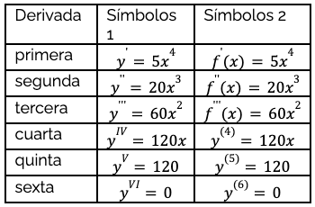
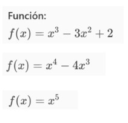
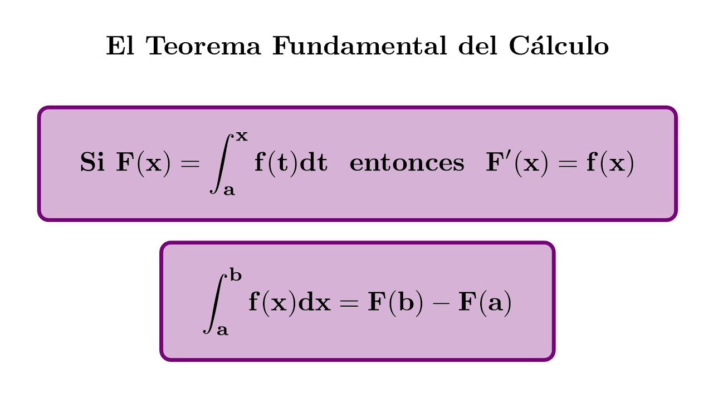

📘 Derivación Sucesiva

La derivación sucesiva son las derivadas de una función después de la segunda derivada. El proceso para calcular las derivadas sucesivas es el siguiente: se tiene una función f, la cual podemos derivar y obtener así la función derivada f’. A dicha derivada de f podemos volver a derivarla, obteniendo (f’)’.
Esta nueva función se denomina segunda derivada; todas las derivadas calculadas a partir de la segunda son sucesivas; estas, llamadas también de orden superior, poseen grandes aplicaciones, como dar información sobre el trazo de la gráfica de una función, la prueba de la segunda derivada para extremos relativos y la determinación de series infinitas.
En este ejemplo podemos ver que f(x)=5x^4 puede ser derivado un maximo de 6 veces
A continuación, puedes probar un ejemplo de derivación usando Python con las siguientes funciones:

Donde incluso podemos ver que el ultimo ejemplo de x^5 puede ser derivado mas de 3 veces
📗 Teorema Fundamental del Cálculo
El Teorema Fundamental del Cálculo establece una relación profunda entre dos conceptos centrales del cálculo: la derivación y la integración.
Se divide en dos partes principales:
📌 Primera parte:
Si una función \( f(x) \) es continua en un intervalo cerrado \([a, b]\), entonces la función definida como:
\( F(x) = \int_a^x f(t)\,dt \)
es derivable, y su derivada es:
\( F'(x) = f(x) \)
Esto significa que derivar una integral definida "anula" la integral.
📌 Segunda parte:
Si \( F(x) \) es una antiderivada de \( f(x) \), es decir, \( F'(x) = f(x) \), entonces se cumple:
\( \int_a^b f(x)\,dx = F(b) - F(a) \)
Esto permite calcular el valor exacto de una integral definida usando una antiderivada.
Este teorema es una de las bases más importantes del cálculo, ya que conecta el área bajo una curva (integral) con el cambio instantáneo (derivada).
Si 𝐹(𝑥)F(x) es una antiderivada de 𝑓(𝑥)f(x), entonces: ∫𝑎𝑏𝑓(𝑥) 𝑑𝑥=𝐹(𝑏)−𝐹(𝑎)∫ ab f(x)dx=F(b)−F(a)